Часте вживання наркотиків та алкоголю може призвести до фізичної залежності, а коли люди різко припиняють вживати наркотики та алкоголь, у них часто виникають тяжкі симптоми абстиненції.
Наша програма детоксикації гарантує безпечний вихід із хворобливого стану та розпочати процес одужання.
Розлади, пов’язані з вживанням психоактивних речовин, можуть проводити багато аспекти життя. Пам’ятаючи про це, наші фахівці з лікування наркозалежності прагнуть лікувати людину як єдине ціле.
Надаючи психотерапію, прийом ліків (за потреби), когнитивно-поведінкову терапію, сімейну терапію та підтримку після виходу з реабілітаційного центру, ми можемо допомогти учасникам набути навичок, що дозволяють справлятися з ситуаціями високого ризику в сім’ї, на роботі, а також допомагати запобігати рецидивам. Ми пропонуємо кілька програм для задоволення конкретних потреб кожної людини.
Пацієнти проходять детоксикацію під наглядом психіатра, медсестер, соціальних працівників та психологів, які забезпечують лікування, спостереження та підтримку в період абстиненції. Додаткове лікування включає групову терапію та заняття протягом дня для отримання нових знань та формування нових навичок.
Когнитивно-поведінкова терапія – це поширений тип розмовної терапії (психотерапія). Ви структуровано працюєте з психологом, психіатром та консультантом з хімічної залежності, відвідуючи індивідуальні консультації.
Когнетивно-поведенческая терапия помогает вам осознать деструктивное или негативное мышление, чтобы вы могли более четко рассматривать сложные ситуации и реагировать на них более эффективно.
Когнитивно-поведінкова терапія допомагає вам усвідомити деструктивне чи негативне мислення, щоб ви могли чіткіше розглядати складні ситуації та реагувати на них ефективніше.
Когнитивно-поведінкова терапія може бути дуже корисним інструментом – самостійно або у поєднанні з іншими методами лікування – при лікуванні психічних розладів, таких як депресія. КПТ є одним із найефективніших інструментів, який допоможе будь-кому залежному навчитися краще справлятися зі стресовими життєвими ситуаціями.
У нашому реабілітаційному центрі Ви отримаєте якісні знання, відпрацюєте ці знання на практиці, та зможете без страху повернутися до соціуму. Наші фахівці також підтримують після реабілітації. Шляхом спілкування та відвідування груп самодопомоги, залежна людина зміцнюється в соціумі, знаходить роботу та починає будувати своє життя.
Якщо у Вас є проблеми із вживанням психоактивних речовин, звертайтесь до реабілітаційного центру Тонус Плюс.
Як проходить лікування наркозалежності:
МОТИВАЦІЯ
- Рекомендація психолога
- Виїзд фахівця
- Гарантія результату
ДЕТОКСИКАЦІЯ
- Виїзд додому (у стаціонарі)
- Очищення організму
- Діагностика психіатра
РЕАБІЛІТАЦІЯ
- Соціальна програма
- Стандартна програма
- Індивідуальна програма
СОЦІАЛЬНА АДАПТАЦІЯ
- Можливість працевлаштування
- Навчання професій
- Амбулаторний супровід
ПІДТРИМКА РОДИЧНИКІВ
- Група взаємодопомоги
- Вебінари (онлайн)
- Індивідуальні консультації
НЕ ХОЧЕ
ЛІКУВАТИСЯ
?
Мотивація на лікування
Кваліфікованим спеціалістам завжди простіше знайти підхід до залежної людини. Наші співробітники надають допомогу в мотивації та інтервенції ЦІЛОДОБОВО. Здійснюємо доставку пацієнта прямо до центру соціальної адаптації.
Лікування наркоманії в Києві відгуки з Google
Наркологический центр «Тонус Плюс»
вулиця Хрещатик, 7/11, Київ
-
неделю назад
Хочу поблагодарить руководителя центра,а также ведущих специалистов,психологов и консультантов за оказанные услуги в
прохождении курса реабилизации.Программа "7 Навыков выздоравливающего наркомана и алкоголика",которая представлена … More на центре, действительно дала мне возможность жить трезвой, насыщенной и полноценной жизнью.
Я разобрался с причинами употребления,а также получил инструменты по преодолению своей зависимости.На данный момент я нахожусь в ремиссии и с успехом применяю знания и навыки, которые были приобретены в процессе реабилитации. -
 месяц назад
Меня зовут Михаил. Мой брат употреблял алкоголь около года. Я предложил ему поехать в наркологический центр Тонус Плюс. Я часто ездил к нему, передавал передачки и говорил, что верю в него. С ним работали квалифицированные психологи и специалисты, … More которые смогли изменить его убеждения и ценности. Благодарю всех за помощь!!!
месяц назад
Меня зовут Михаил. Мой брат употреблял алкоголь около года. Я предложил ему поехать в наркологический центр Тонус Плюс. Я часто ездил к нему, передавал передачки и говорил, что верю в него. С ним работали квалифицированные психологи и специалисты, … More которые смогли изменить его убеждения и ценности. Благодарю всех за помощь!!! -
 месяц назад
Илья, 30 лет. На протяжении 15 лет был зависимый от опиоидных видов наркотиков. Не знал куда обратиться за помощью. Узнал в интернете про наркологический центр Тонус Плюс и решил, что это мой шанс поменять свою жизнь. Прошел базовый курс … More реабилитации по коррекционно-развивающей программе и уже 8 месяцев нахожусь в трезвости. Спасибо большое!!!
месяц назад
Илья, 30 лет. На протяжении 15 лет был зависимый от опиоидных видов наркотиков. Не знал куда обратиться за помощью. Узнал в интернете про наркологический центр Тонус Плюс и решил, что это мой шанс поменять свою жизнь. Прошел базовый курс … More реабилитации по коррекционно-развивающей программе и уже 8 месяцев нахожусь в трезвости. Спасибо большое!!! -
месяц назад
Кристина. Мой муж употреблял амфетамин около 2 лет. Я думала что мы будем разводиться, но наркологический центр Тонус Плюс помог нашей семье восстановить потерянные отношения. Он пробыл в центре 3 месяца и полностью поменялся. Я его даже … More не узнала. Он сейчас трезвый 6 месяцев, уделяет мне внимание и заботу. Благодарю всех сотрудников наркологического центра Тонус Плюс за помощь!!! -
 3 months ago
Здравствуйте, Денис. Как-то раз в школе я попробовал курить марихуану и мне понравилось. Через месяц я стал ее курить каждый день . Через год употребления я расстался с девушкой ине смог поступить в универ. Обратился за помощью к родителям. … More Мы поехали в реабилитационный центр Тонусплюс, где я остался на 5 месяцев. В центре мне помогли избавиться от зависимости и обрести новую жизнь. Спасибо Вам!!!
3 months ago
Здравствуйте, Денис. Как-то раз в школе я попробовал курить марихуану и мне понравилось. Через месяц я стал ее курить каждый день . Через год употребления я расстался с девушкой ине смог поступить в универ. Обратился за помощью к родителям. … More Мы поехали в реабилитационный центр Тонусплюс, где я остался на 5 месяцев. В центре мне помогли избавиться от зависимости и обрести новую жизнь. Спасибо Вам!!! -
 3 months ago
Николай, 19 лет. Я со своей компанией начал курить траву и нюхать фен. Скоро это заметили родители и отправили меня в реабилитационный центр Тонусплюс, где я совместно с психологами начал изучать свою проблему. За 3 месяца мое поведение … More и мышление изменилось. Я впервые в жизни начал чувствовать себя хорошо без употребления. Моя жизнь кардинально изменилась и сейчас живу в чистоте. Спасибо всем, кто принимал участие в моем выздоровлении!!
3 months ago
Николай, 19 лет. Я со своей компанией начал курить траву и нюхать фен. Скоро это заметили родители и отправили меня в реабилитационный центр Тонусплюс, где я совместно с психологами начал изучать свою проблему. За 3 месяца мое поведение … More и мышление изменилось. Я впервые в жизни начал чувствовать себя хорошо без употребления. Моя жизнь кардинально изменилась и сейчас живу в чистоте. Спасибо всем, кто принимал участие в моем выздоровлении!! -
2 месяца назад
Меня зовут Светлана. Выражаю слова благодарности всем сотрудникам центра "Тонусплюс", психологам и руководителю центра за то что смогли вернуть моего сына к здоровой и трезвой жизни. Я попробовала разные методы лечения, но лучшим … More и эффективным на данный момент является РЦ "Тонусплюс". Мой сын употреблял соли. После прохождения полного курса реабилитации он трезвый 10 месяцев. Спасибо Вам за Ваш вклад в его будущее!
Як довго лікують від наркоманії?
Наркологічний центр «Тонус Плюс» має такі програми: перезавантаження, зрив 90 днів, експрес програма. Повний курс лікування наркологічної залежності складається для кожного пацієнта з огляду на тяжкість ситуації, тривалість курсу різна, але не менше 4-5 тижнів. Навіть після повноцінного лікування людині буде важко зберігати байдужість до наркотиків, якщо навколо неї будуть залежні «друзі», старі зв’язки та маргінальне оточення. В даному випадку показана пролонгована ізоляція пацієнта як основа терапії та стабільного результату.
Як і де житимуть пацієнти клініки?
Для кожної людини тривале розлучення з близькими та будинком несе негативні переживання. Нівелювати ці моменти можна за допомогою комфортної та затишної у всіх сенсах обстановки. Багатопрофільний центр реабілітації «Тонус Плюс» пропонує зручні номери, де людина почуватиметься комфортно під наглядом лікарів. Уважний персонал з розумінням ставиться до проблем пацієнтів.
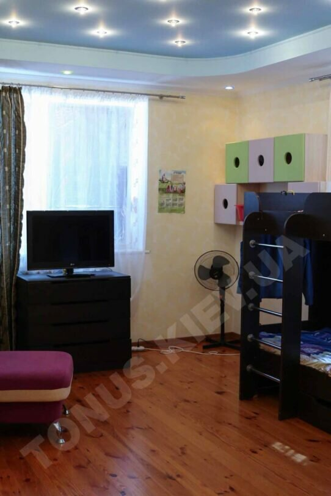
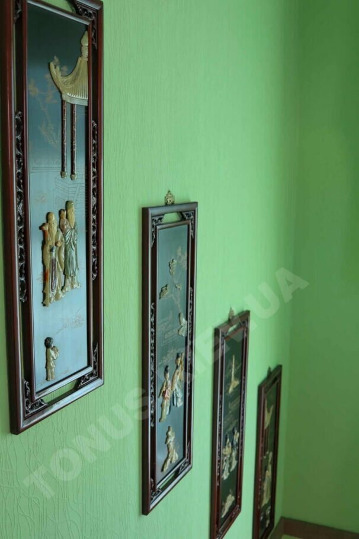
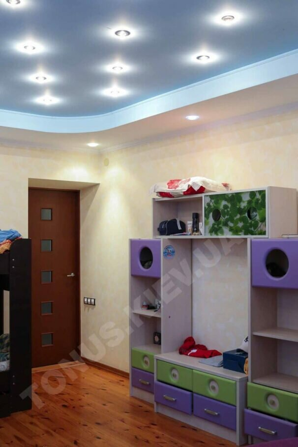
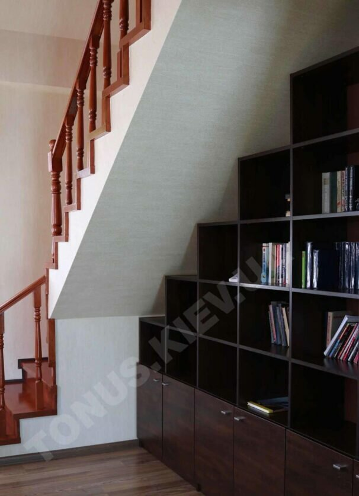
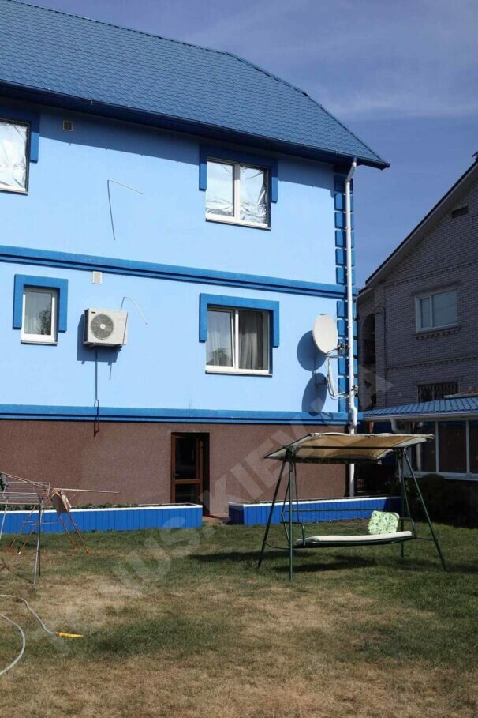
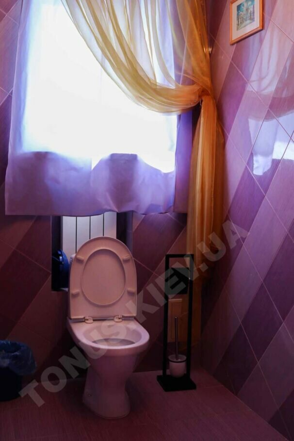
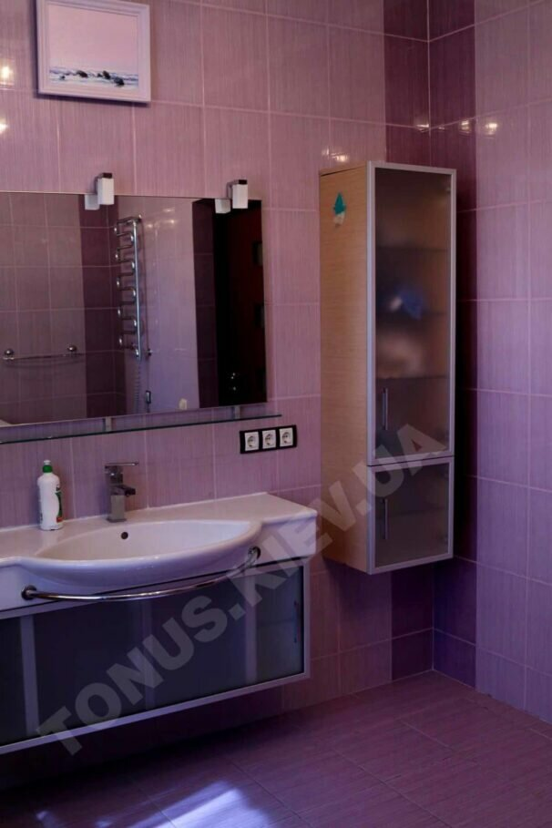
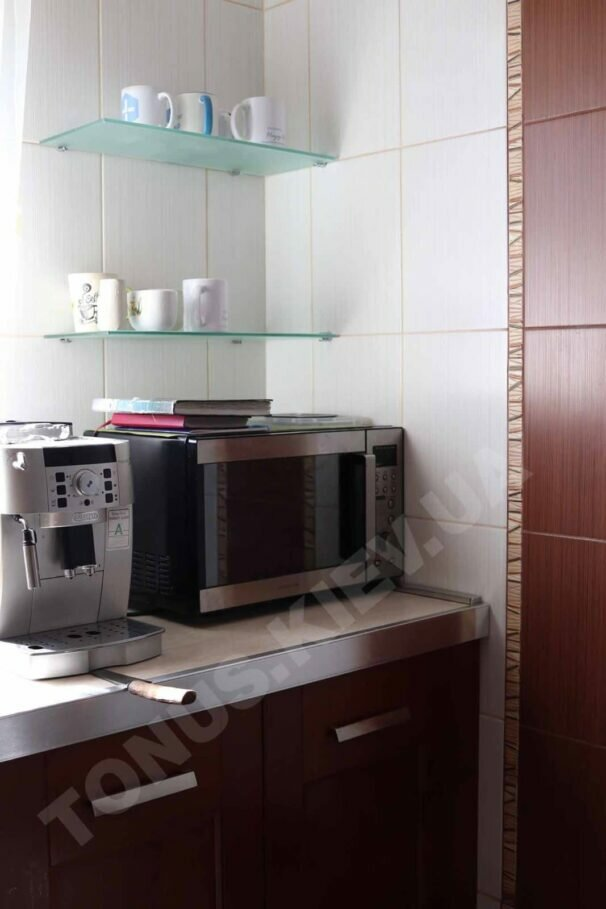
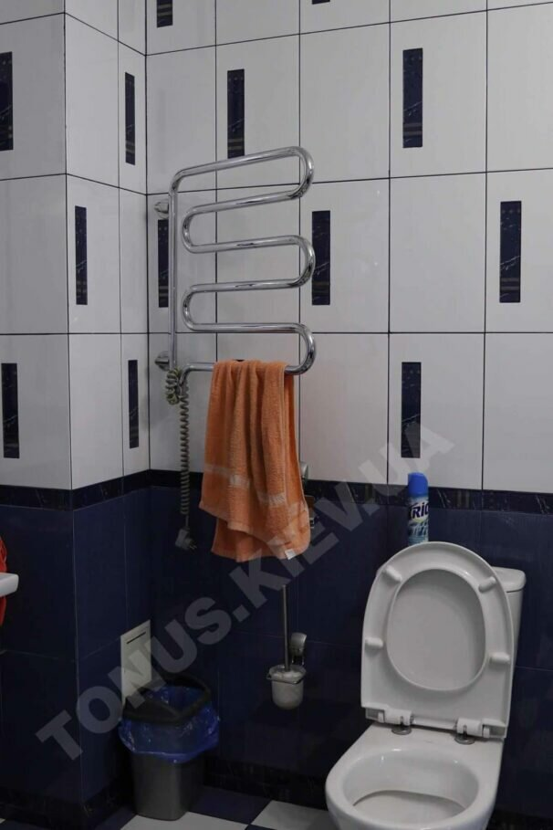
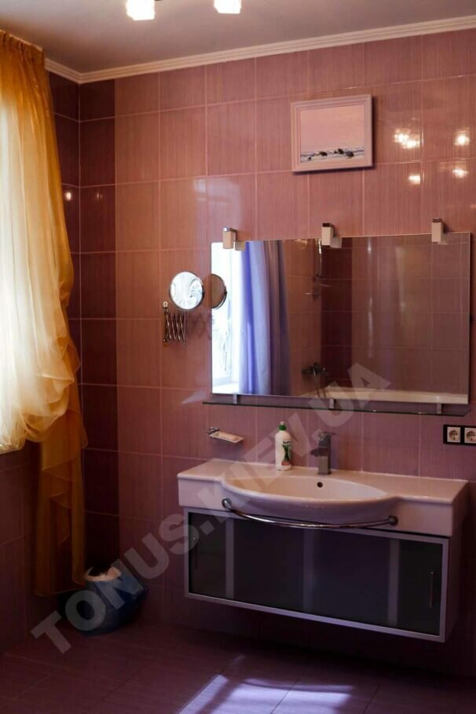
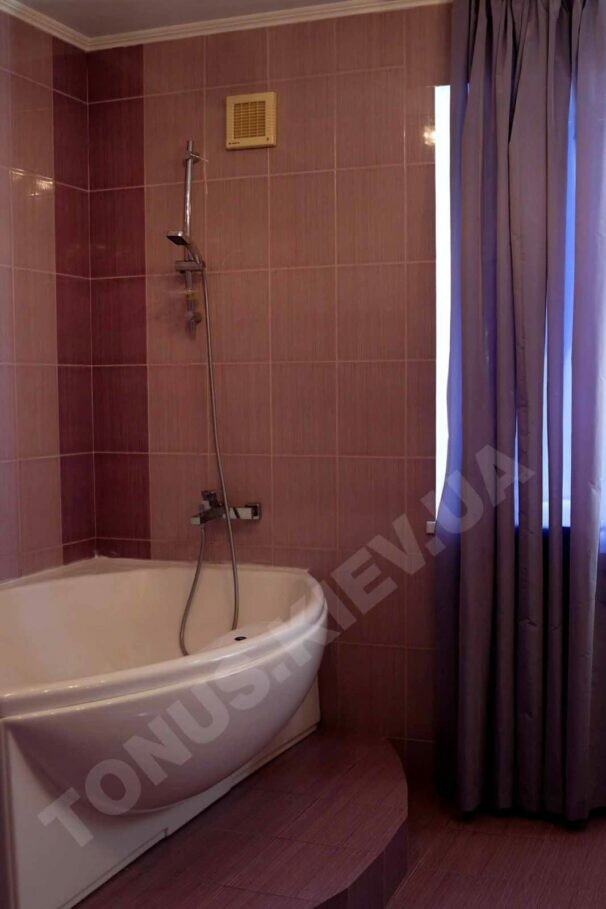
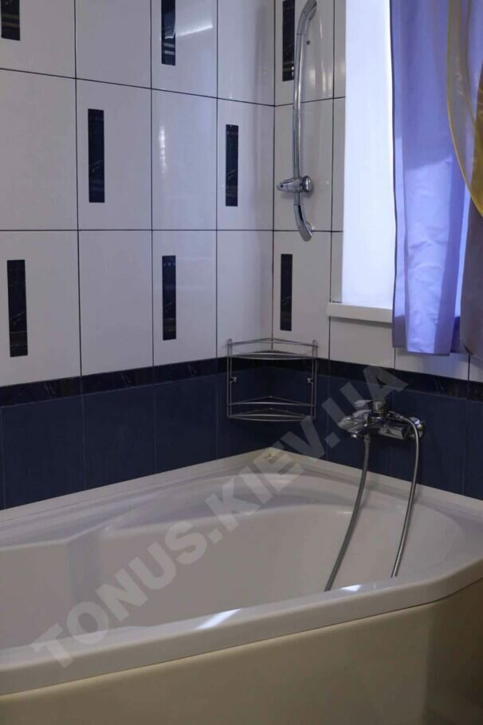
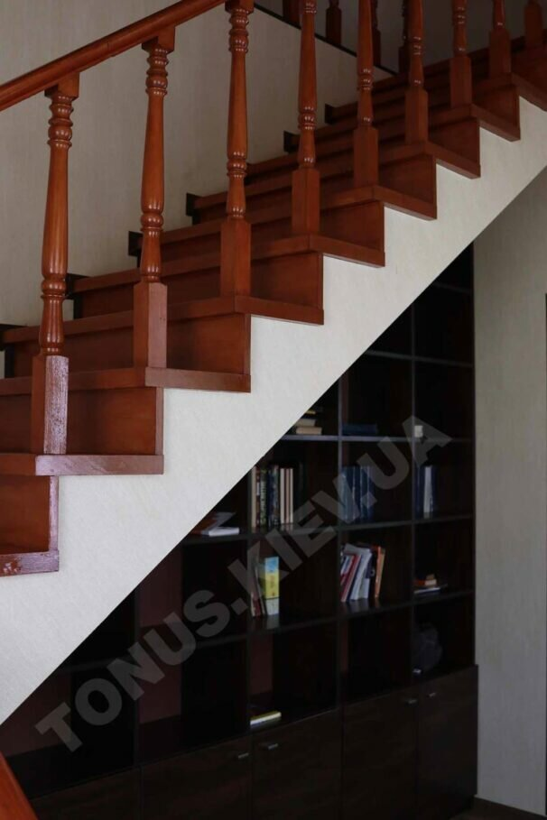
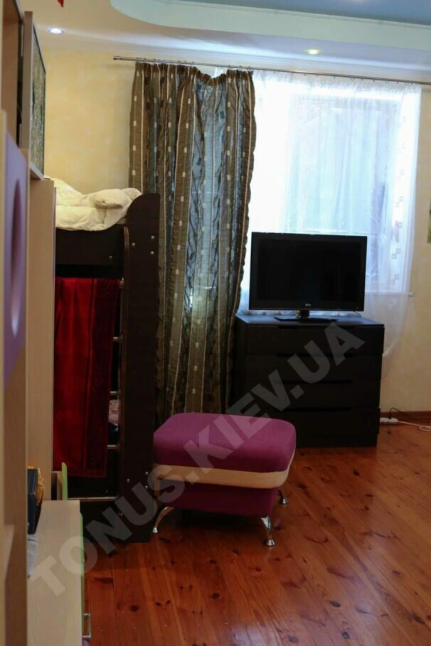
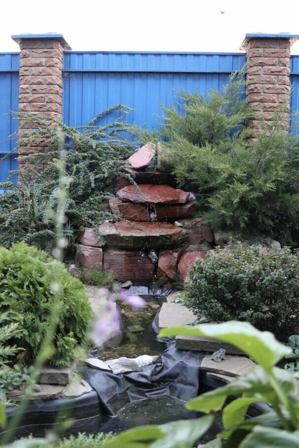
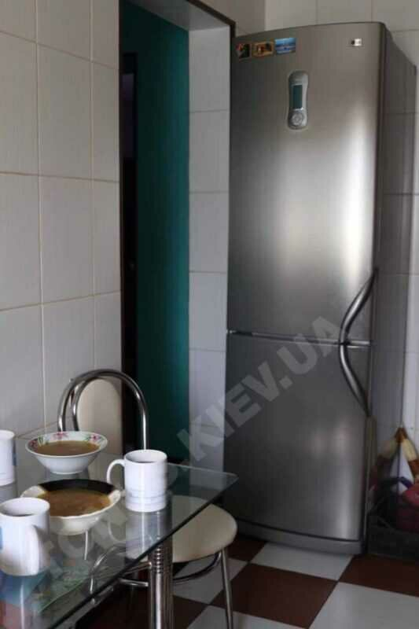

Андрій Кочетков
Спеціалізація: наркологія, психіатрія, психотерапія.
Рік початку практики: 2008
Кваліфікаційна категорія: перша

Олена Алфьорова
Спеціалізація: психотерапія.
Рік початку практики: 2005

Ігор Алфьоров
Спеціалізація: практична психологія.
Рік початку практики: 2013
Ліцензії та сертифікати
Фахівці реабілітаційного центру для залежних Тонус Плюс мають право лікарської діяльності у сферах: лікування наркоманії, алкоголізму та ігроманії. Всі лікарі мають вищу освіту та великий досвід у сферах лікування, реабілітації та запобігання залежним зривам. Відсоток одужання пацієнтів каже сам за себе.


{kind=link}
{kind=link}
{kind=link}
{kind=link}
{kind=link}
{kind=link}
{kind=link}
{kind=link}
{kind=link}
{kind=link}
{kind=link}
{kind=link}